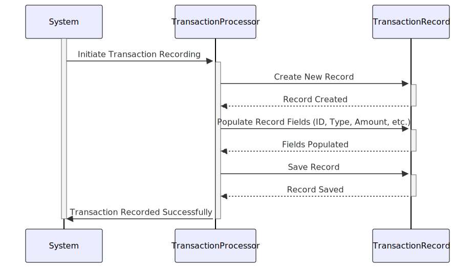

Gerado em: 1º de outubro de 2024
Título do Documento: Especificação de Registro de Transação de Cartão de Crédito
Descrição Resumida:
Este documento descreve a estrutura de dados para registrar transações individuais de cartão de crédito dentro de um sistema financeiro baseado em COBOL. Seu objetivo é garantir a uniformidade e a consistência na forma como essas informações são capturadas e armazenadas.
Histórias do Usuário:
Como analista financeiro, preciso de um formato padronizado para registrar os detalhes da transação para que eu possa analisar padrões de gastos, identificar tendências e gerar relatórios abrangentes com precisão.
Épico Relacionado:
4 - Processamento de Transações
Requisitos Funcionais:
- O sistema deve suportar uma variedade de tipos de transação, cada um identificado por um código exclusivo de dois caracteres (por exemplo, “SA” para Venda, “CR” para Crédito).
- Cada registro de transação deve incluir uma descrição detalhada do comerciante envolvido, incluindo sua identificação única, nome, cidade e CEP.
- O sistema deve registrar com precisão o valor monetário de cada transação, capturando o valor com duas casas decimais para precisão.
- Cada registro de transação deve ter um carimbo de data e hora para indicar o horário original da transação e quando ela foi processada pelo sistema.
Requisitos Não Funcionais:
- Desempenho: O sistema deve ser capaz de processar e armazenar um grande volume de registros de transações com eficiência, sem impactar o desempenho geral do sistema.
- Integridade de Dados: O sistema deve aplicar regras de validação de dados para garantir a precisão e consistência dos dados de transação (por exemplo, formatos de data válidos, campos obrigatórios).
- Auditabilidade: Todos os registros de transações devem estar prontamente acessíveis para fins de auditoria, com rastreabilidade clara até a origem da transação.
Critérios de Aceitação:
- O sistema pode registrar com sucesso uma nova transação com todos os campos de dados obrigatórios preenchidos corretamente.
- O sistema aplica regras de validação de dados, rejeitando transações com dados inválidos ou ausentes.
- Os registros de transações podem ser facilmente recuperados e filtrados com base em critérios como intervalo de datas, tipo de transação ou número do cartão.
Melhorias de Código:
- Tratamento de Erros: Implementar tratamento de erros mais robusto para gerenciar cenários como entradas de dados inválidas ou falhas do sistema durante o processamento de transações.
- Comentários de Código: Adicionar comentários claros e concisos dentro do código COBOL para explicar o propósito e a funcionalidade de diferentes campos de dados e seções.
Melhorias de Segurança:
- Criptografia de Dados: Explorar a criptografia de dados confidenciais dentro do registro de transação, como o número do cartão de crédito, para protegê-lo de acesso não autorizado.
- Controle de Acesso: Implementar medidas rígidas de controle de acesso para garantir que apenas pessoal autorizado possa visualizar, modificar ou excluir registros de transações.
Diagrama Conceitual:

–Made by “Smart Engineering” (by Compass.UOL)–